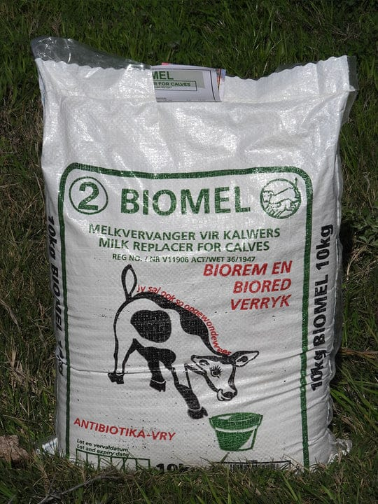

Biomel Milk
Biomel milk replacer for calves is designed to mimic the nutritional profile of whole cow's milk, providing essential nutrients for growth and development. It typically contains proteins, fats, vitamins, and minerals tailored to meet the specific needs of calves. The main components include:
- Proteins: Sourced from whey or other milk proteins, they support muscle growth and overall health.
- Fats: Provide energy and aid in the absorption of fat-soluble vitamins.
- Vitamins and Minerals: Essential for immune function, bone development, and overall metabolic processes.
Biomel milk replacers are formulated to be easily digestible, promoting better nutrient absorption. They also help reduce the risk of digestive disorders commonly seen in calves fed with inadequate milk substitutes. Proper mixing and feeding protocols are crucial for optimal results.